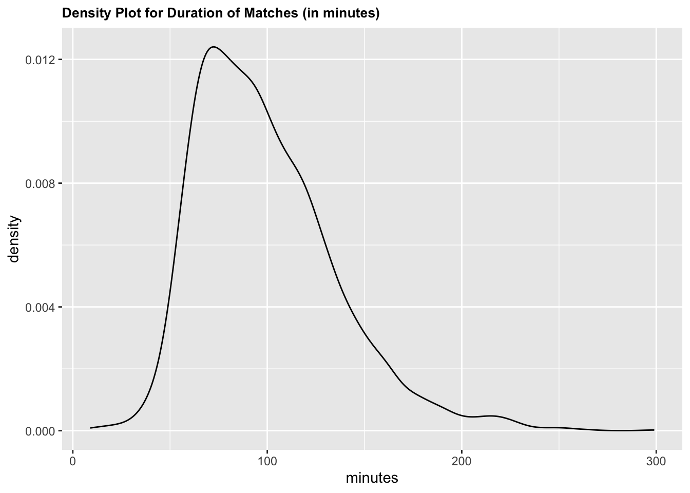

MATH 254 - Winning in Tennis: Are There Hidden Factors?
Authors
Affiliations
Pandelis Margaronis
Hamilton College
Troy Pollock
Hamilton College
Tural Sadigov
Hamilton College
Published
October 17, 2022
Abstract
This paper investigates the factors that contribute to winning in professional tennis. Using a data set with Association of Tennis Professional Matches from 2000, we conduct various tests. Firstly, we conduct a chi-square test with permutation to identify if the likelihood of an underdog win is independent of court surface. Then, we conduct a difference in means test to identify if the duration of a match is independent of court surface. Finally, we create a model to predict match duration in minutes with features such as court surface, winner rank, loser rank, winner ace, and loser ace. Some professionals may have higher success rates on specific court surfaces, but court surface does not, on average, impact the likelihood of an upset in tennis. Similarly, although tennis matches can range in length from under an hour to multiple hours, the duration of a tennis match is independent of court surface. The paper explores the creation of multiple models in an attempt to, as accurately as possible, predict the duration of a tennis match given certain variables.
1 Background and Significance
There are countless factors and statistics that influence the outcome of a sporting event; more specifically, factors such as court surface and ranking can play a role in a tennis match. Different players are said to have varying degrees of success when it comes to different court surfaces. For example, Rafael Nadal, a 22-time Grand Slam winner, has been most successful on clay throughout his career. On the other hand, his competitor and fellow multi-time Grand Slam Winner, Roger Federer, has found most of his success on grass. In another study, it was discovered that the #10 seed typically has about a 0.35 chance of beating the #2 seed in these tournaments (Ovaska and Sumell). This number increases when it comes to players who are not ranked as high, assuming the distance of eight spots remains constant. It also increases in Grand Slam tournaments. Moreover, Roger Federer’s probability of winning a match on hard court is roughly 0.636; however, that number drops to 0.130 on clay ([1]).
There is certainly an influence of court on player performance, as athletes have preferences. Many studies have backed up this claim with abundant evidence. Thus, it is interesting to consider how the court surface can affect the chance of an upset (a lower seed beating a higher seed). Additionally, one can look into whether court surface is related to the duration of a game, since tennis matches can take anywhere from under an hour to multiple hours. Finding connections between the aforementioned variables could play a big role in sports betting. From an economic standpoint, a longer tennis match brings in more money and attention.
The goal of this project is to study the role that court surface and ranking play in the outcome of different characteristics of a tennis match using Association of Tennis Professionals (ATP) match data. This paper sets out to discover any links between court surface and the likelihood of upsets, as well as duration of time.
2 Methods
a. Data collection.
This data was collected from tennis matches across various Association of Tennis Professionals (ATP) tournaments during the year 2000. Each observation (each row) in the data set represents information about a specific tennis match, and includes info about both the winner and the loser. Such information includes, but is not limited to, their respective rankings prior to the tournament, and also their performance stats from the match. More information regarding the match itself is also included, such as which round it was a part of (ex: semi-final round) and the duration of the match in minutes.
There are missing data points (N/A’s), with some columns having a lot more missing data than others. Missing data is dropped where appropriate. The variables used in our tests and models do not have much missing data, and with missing data rows dropped, most rows remain to be used for testing.
Individual observations: Each row in our data set represents a tennis match, on a certain day and in an ATP tournament. Some examples of data included in each observation include, but are not limited to, winner rank, loser rank, winner ace, loser ace, minutes (duration), and surface that the match was played on.
Main Variables:
Surface - A categorical variable with 4 levels (carpet, clay, grass, hard-court). It represents the surface that the match was played on.
Minutes - A numerical variable that is continuous. Describes the length of the match in minutes.
Winner Rank - A numerical variable that is discrete. Describes the rank of the winner prior to the tournament.
Loser Rank - A numerical variable that is discrete. Describes the rank of the loser prior to the tournament.
Winner Ace - A numerical variable that is discrete. Describes the number of aces that the winner had in the match.
Loser Ace - A numerical variable that is discrete. Describes the number of aces that the loser had in the match.
For more information on other variables, refer to the cited data source. [2]
c. Analytic Methods.
Likelihood of an Upset vs Surface:
Chi-square testing is used to investigate if the likelihood of an upset is independent of the court surface. The testing will involve permutation testing to permute the court surfaces for every upset and identify if there are statistically significant differences among the different surfaces. This will be done by calculating the chi-squared statistics for each permutation conducted.
A linear model to predict duration of a match (in minutes) based off of court surface, and the competitors’ ranks going into the match:
A regression model was created in an attempt to predict the duration of a tennis match, in minutes, given the ranks of the two players participating in the match (as separate variables), the number of aces by the two players participating in the match (as separate variables), and the court surface that the match was played on.
Duration vs Surface:
A hypothesis test, which tests the difference in means of duration of a tennis match (in minutes) on hard court surface and clay was conducted to observe if duration is independent of surface. These two surfaces were selected because they are the two surfaces in the data set that appear on the most observations.
3 Results
There are various results shown below from different tests that were conducted. The code utilizes different aspects from the tidyverse ([3]), infer ([4]), and ggplot2 ([5]) packages.
There are four different surfaces on which tennis matches were played in this data set. The surfaces consists of carpet, clay, grass, and hard-court.
Loading the data, and mutating a new column that informs us about upsets.
```{r}new_data %>%group_by(surface) %>%ggplot(aes(x = surface)) +geom_bar() +ggtitle("Number of Tennis Matches Played Per Surface - ATP Tournaments in 2000") +theme(plot.title=element_text(size=10, face ='bold'))```
Mutate: adding a row to indicates if there was an upset (1) or not (0)
The code below creates a data-frame to display details regarding the number of upsets per court surface and respective proportions. See Appendix for derivation of the results below.
Is the likelihood of an upset, where a lower ranked player beats a higher ranked player, independent of court surface?
3.1.1 Checking Conditions for a Chi-Square Test for Independence:
The observations are independent of one another, and the observations were collected in no specific order; thus, independence and randomness are satisfied. Both variables being studied are categorical. The test checks for independence between the likelihood of an upset and court surface. The value of each cell’s expected value is at least 5 in at least 80% of the cells (to be precise, in all cells), and no cell has an expected value of less than one since the minimum is 65 (see code below). Since all conditions are met, we are able to conduct a chi-square test in which we test for independence between the following variables: upset and surface.
\(H_o\): The likelihood of an upset is independent of the court surface in a tennis match.
\(H_a\): The likelihood of an upset is dependent on the court surface in a tennis match.
\(\alpha\): 0.001
Code
```{r}set.seed(10)# cleaning data for usage# new_data_2$upset<-factor(new_data_2$upset)# new_data_2$surface<-factor(new_data_2$surface)# calculating the independent test statisticobserved_indep_stat <- new_data_2 %>%select(upset, surface) %>%mutate(upset =factor(upset),surface =factor(surface)) %>%drop_na() %>%specify(surface ~ upset) %>%hypothesize(null ='independence') %>%calculate(stat ='Chisq')# chi-square test with permutation:null_dist <- new_data_2 %>%select(upset, surface) %>%mutate(upset =factor(upset),surface =factor(surface)) %>%drop_na() %>%specify(surface ~ upset) %>%hypothesize(null ="independence") %>%generate(reps =1000, type ="permute") %>%calculate(stat ="Chisq")null_dist %>%visualize() +shade_p_value(observed_indep_stat,direction ="greater")null_dist %>%get_p_value(observed_indep_stat, direction ='greater') # p-value: 0.311 ```
# A tibble: 1 × 1
p_value
<dbl>
1 0.311
3.2 Investigating Duration of Tennis Matches:
Does court surface impact the duration of a tennis match?
We chose to explore this topic with a difference in means test between the mean duration of tennis matches on clay and the mean duration of tennis matches on hard-court. These two surfaces were chosen over carpet and grass because they had significantly more observations.
surface minutes
Clay: 985 Min. : 9.00
Hard:1513 1st Qu.: 71.00
Median : 92.00
Mean : 98.42
3rd Qu.:118.00
Max. :265.00
[1] 2498 2
3.2.1 Checking Conditions for a Difference in Means Test:
Both the clay and hard-court samples are independent. The sample sizes are \(n_1 = 1711\) and \(n_2 = 1119\) for hard court and clay respectively. Both of these values are greater than or equal to 30, so they are large enough to satisfy the condition that checks for (approximate) normality. Moreover, both samples are less than 10% of all matches played on the respective surface. As a result, the condition for sufficiently large samples checks out. Since all conditions are met, we are able to conduct a difference in means test to study whether court surface plays a role in the duration of a tennis match.
3.2.2 Hypothesis Test: Difference in Means
\(H_o\): The mean duration (in minutes) of a tennis match on clay surface is equal to the mean duration (in minutes) of a tennis match on hard-court surface. That is, the difference in means is equal to 0. Thus, \(\mu_1 - \mu_2 = 0\).
\(H_a\): The mean duration (in minutes) of a tennis match on clay surface is NOT equal to the mean duration (in minutes) of a tennis match on hard-court surface. That is, the difference in means is not equal to 0. Thus, \(\mu_1 - \mu_2 \neq 0\).
\(\alpha\): 0.001
3.2.3 Code to set up the difference in means test:
Calculating an observed difference in means between clay duration and hard-court duration.
Assembling multiple linear regression models while utilizing a validation set approach.
3.3.1 Approach:
To conduct a validation set approach, we took our data set and conducted various splits. We split the data into two groups initially: training data and testing data. Then, the training data (or non-testing data) was split into a training component and a validation component (See Appendix).
4 Discussion/Conclusions
As a disclaimer, various interpretations of our results in this paper use ATP Tennis and professional tennis as interchangeable populations. Considering that ATP is a high-level professional organization, it is safe to expect similar results as those that were observed across non-ATP matches and tournaments. This is under the assumption that the sample falls under a general population of high-level professional tennis. It would not be realistic to generalize our results to amateur tennis, or other less-known intermediate organizations.
Predicting an upset is a difficult task, and every competition generally has both a favorite and an underdog. In tennis, the ‘favorite’ to win typically depends on rank and in many matches, court surface. Influential players like Roger Federer and Rafael Nadal have distinct preferences of court surface, and their record shows it. In important matches, for many pro tennis players, court surfaces could impact the outcome, and in some cases, may cause an upset. The objective of this study was to examine the relationship between court surface and upsets of tennis matches using data collected from tennis matches across various Association of Tennis Professionals (ATP).
In understanding that preferred court surface is an advantage for many pro tennis players, especially in uneven match ups, we ask: is there sufficient evidence to claim that an upset is independent of court surface? After conducting the chi-squared tests for each permutation of our data, we have confidence that an upset and court surface are indeed independent of each other. The p-value obtained from the chi-square test was approximately equal to 0.311. This value is much larger than the pre-declared significance level of 0.001. Thus, we fail to reject the null hypothesis that the likelihood of an upset is independent of the court surface in a tennis match. We do not have conclusive evidence for the alternative hypothesis that the likelihood of an upset is dependent on the court surface in a tennis match.
We chose to explore where court surface impacts the duration of a tennis match with a difference in means test between the mean duration of tennis matches on clay and the mean duration of tennis matches on hard-court. The p-value that was generated from the difference in means test is approximately equal to 0.356. This p-value is larger than the significance level of 0.001. As a result, we fail to reject the null hypothesis that the mean duration (in minutes) of a tennis match on clay surface is equal to the mean duration (in minutes) of a tennis match on hard-court surface.
In an attempt to predict the duration of a tennis match created various linear regression models. Out of the models created, the model that performed the best was model 2. It had the greater \(R^2\) value over the four models we created. Our chosen model used court surface, winner ace, loser ace, winner rank and loser rank to predict match duration. Of those predictors, those that proved to be statistically significant were the following: loser rank, winner ace, loser ace, and surface, for all levels except grass. Loser rank has a negative coefficient, meaning that, as the ranking of the loser in a tennis match gets worse, the duration of the match decreases. This makes sense; a worse player is easier to beat. Loser ace has a positive coefficient, meaning that match duration increases as the loser gets more aces. This makes sense, since an increase amount of aces for the loser gives them more points, as well as confidence. This would, on average, temporarily even the playing field by bringing their score closer to that of the winner and thus extending the length of the match. We were surprised that winner ace also had a positive coefficient, since one would expect that as the winner got more aces, the match would finish sooner. In terms of court surface, results varied greatly with different seed generators, something that is addressed below.
By changing the random seed used in our calculations, we get different results as to which model performs best. If we were to redo this process from scratch, we would use logistic regression. This way, we would split the data repeatedly with parallel programming, repeating the process where non-testing data is split into a training set and validation set. Bootstrap sampling would be utilized in this process. Overall, this new approach would ensure more stability in our results and less variability in which model is “ideal” for fitting the data.
Finally, we give credit to the knitr package ([6]) for providing the resources needed to format and construct this paper, as well as USCLAP ([7]) for providing the project template.
5 Appendix
The code below consists of various calculations that produced the needed results to create the “upsets_per_court_surface” data frame.
```{r}new_data %>%select(minutes) %>%drop_na() %>%ggplot(aes(x = minutes)) +geom_density() +ggtitle("Density Plot for Duration of Matches (in minutes)") +theme(plot.title=element_text(size=10, face ='bold'))```

Density Plot for Duration of Matches (in log(minutes))
Code
```{r}new_data %>%select(minutes) %>%drop_na() %>%mutate(log_minutes =log(minutes)) %>%ggplot(aes(x = log_minutes)) +geom_density() +ggtitle("Density Plot for Duration of Matches (in log(minutes))") +theme(plot.title=element_text(size=10, face ='bold'))```
The following code creates a density plot for duration of matches. It shows a density plot for minutes vs log(minutes)). The code uses aspects of the reshape ([8]) and ggplot2 ([5]) packages.
Code
```{r}library(reshape)library(ggplot2)new_data_minutes <- new_data %>%select(minutes) %>%drop_na() %>%mutate(log_minutes =log(minutes))df_minutes <-data.frame( new_data_minutes %>%select(minutes, log_minutes))df_minutes %>%mutate(row =row_number()) %>%pivot_longer(names_to ='variable', values_to ='response', cols =c(minutes, log_minutes)) %>%ggplot(aes(x = response, fill = variable)) +geom_density() +facet_wrap(~variable, scales ='free') +ggtitle("Density Plot for Duration of Matches - minutes vs log(minutes)") +theme(plot.title=element_text(size=10, face ='bold'))```
Side-by-side box plots displaying the distributions of minutes per game, for each surface.
Code
```{r}boxplot(new_data$minutes ~ new_data$surface, col='steelblue',main='Duration by Surface (in minutes)',xlab='Surface',ylab='Duration')```
Density plot displaying the density plot for both the winner_rank and loser_rank variables.
Code
```{r}library(reshape)library(ggplot2)df_ranks <-data.frame( new_data_2 %>%select(loser_rank, winner_rank) %>%drop_na())data_1 <-melt(df_ranks)data_1 %>%ggplot(aes(x=value, fill=variable)) +geom_density(alpha=.25) +ggtitle("Density plot displaying the density plot for both the winner_rank and loser_rank variables.") +theme(plot.title=element_text(size=9, face ='bold'))```
5.1 Linear Regression Model: Predicting Minutes - The Duration of a Tennis Match
The code below utilizes aspects from the tidymodels ([9]) and vip ([10]) libraries.
Code
```{r}library(tidymodels)library(vip)```
Mutating new variable: log of response variable (minutes)
The code below splits the data into two groups: Testing Data and Non-testing (Training and Validation) Data. The code draws inspiration from the Math254 github page. [11]
```{r}hist(df$log_minutes_plus_1,main='Histogram of Durations of Games - log(minutes + 1)',xlab='Log(Minutes + 1)',ylab='Frequency')hist(df$minutes,main='Histogram of Durations of Games - Minutes',xlab='Minutes',ylab='Frequency')```
```{r}set.seed(10)chosen_model_2 <- lm_specs %>%last_fit(minutes ~ surface + w_ace + l_ace + winner_rank + loser_rank, df_split, metrics =metric_set(rsq, rmse, mae))chosen_model_2collect_metrics(chosen_model_2)collect_predictions(chosen_model_2) %>%rsq(truth = minutes, estimate = .pred)collect_predictions(chosen_model_2) %>%ggplot(aes(x = minutes, y = .pred)) +geom_point() +geom_abline(slope =1, intercept =0) +ggtitle("Regression Model predicting the duration of a tennis match from court surface, number of aces by winner, and number of aces by loser. ") +theme(plot.title=element_text(size=6, face ='bold'))```
# Resampling results
# Manual resampling
# A tibble: 1 × 6
splits id .metrics .notes .predictions .workflow
<list> <chr> <list> <list> <list> <list>
1 <split [2690/674]> train/test split <tibble> <tibble> <tibble> <workflow>
# A tibble: 3 × 4
.metric .estimator .estimate .config
<chr> <chr> <dbl> <chr>
1 rsq standard 0.300 Preprocessor1_Model1
2 rmse standard 32.4 Preprocessor1_Model1
3 mae standard 24.7 Preprocessor1_Model1
# A tibble: 1 × 3
.metric .estimator .estimate
<chr> <chr> <dbl>
1 rsq standard 0.300
Investigating the significance of a model. We used multiple testing, so we must adjust our a value.
Code
```{r}a =0.05/5set.seed(10)extract_workflow(chosen_model_2) %>%tidy() %>%mutate(sgnfc =if_else(p.value < a, 'Yes', 'No')) %>%arrange(p.value) %>%ggplot(aes(x = term, y = p.value)) +geom_point() +geom_hline(yintercept = a) +theme(axis.text.x =element_text(angle =90, vjust =1, hjust =1)) +ggtitle("Model Predictor P-values") +theme(plot.title=element_text(size=15, face ='bold'))```
Bar graph displaying the importance of each variable as a predictor.
Code
```{r}model <-extract_fit_engine(chosen_model_2$.workflow[[1]])vip(model) +ggtitle("Comparing Importance of Predictor Coefficients in Chosen Model") +theme(plot.title=element_text(size=10, face ='bold'))```
Wickham, H., Averick, M., Bryan, J., Chang, W., McGowan, L. D., François, R., Grolemund, G., Hayes, A., Henry, L., Hester, J., Kuhn, M., Pedersen, T. L., Miller, E., Bache, S. M., Müller, K., Ooms, J., Robinson, D., Seidel, D. P., Spinu, V., Takahashi, K., Vaughan, D., Wilke, C., Woo, K. and Yutani, H. (2019). Welcome to the tidyverse. 4 1686.